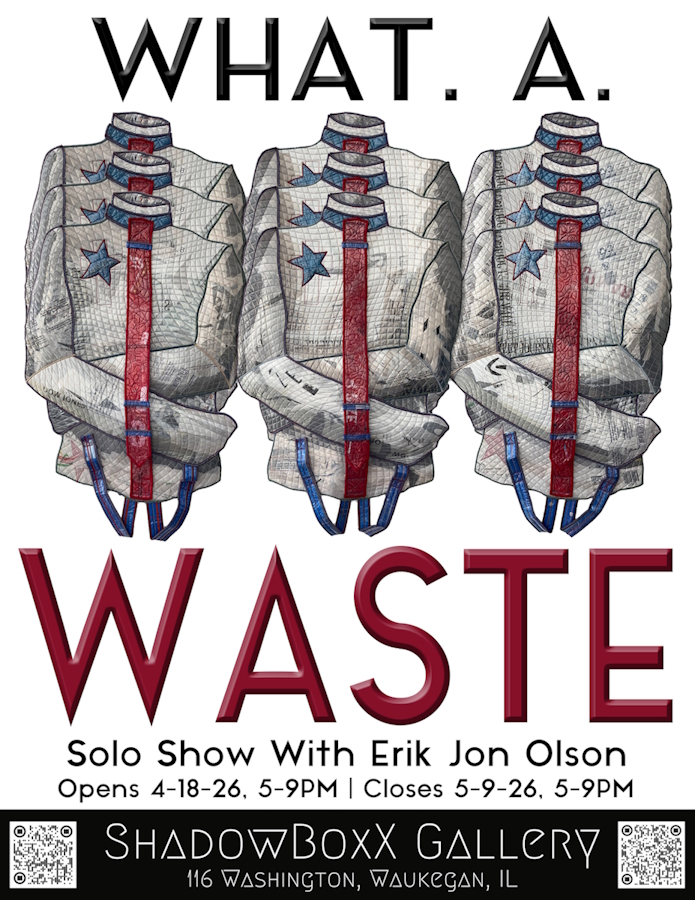

Erik Jon Olson: What. A. WASTE
This solo show highlights the work of independent artist Erik Jon Olson. His vivid large-scale works are made of quilted plastic waste, and cast a fresh eye on environmental concerns and how unfettered capitalism and mass consumption waste our natural resources and damages our society.
Olson’s artwork is uplifting, with beautifully colorful and masterfully executed pieces. He even reuses the scrap from his own creative process to achieve zero material waste.
Preview of the artist and his works: https://www.manvshadow.com/what-a-waste-exhibition-erik-jon-olson
You can also contact mev@manVshadow.com to schedule a private showing.